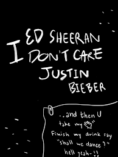

CAUSE I DON'T CARE BY ED SHEERAN

I'm at a party I don't wanna be at
And I don't ever wear a suit and tie, yeah
Wondering if I could sneak out the back
Nobody's even looking me in my eyes
Then you take my hand
Finish my drink, say, "Shall we dance?" (hell, yeah)
You know I love you, did I ever tell you?
You make it better like that
Don't think I fit in at this party
Everyone's got so much to say (yeah)
I always feel like I'm nobody, mm
Who wants to fit in anyway?
'Cause I don't care when I'm with my baby, yeah
All the bad things disappear
And you're making me feel like maybe I am somebody
I can deal with the bad nights
When I'm with my baby, yeah
Ooh, ooh, ooh, ooh, ooh, ooh
'Cause I don't care as long as you just hold me near
You can take me anywhere
And you're making me feel like I'm loved by somebody
I can deal with the bad nights
When I'm with my baby, yeah
Ooh, ooh, ooh, ooh, ooh, ooh
We at a party we don't wanna be at
Tryna talk, but we can't hear ourselves
Read your lips, I'd rather kiss 'em right back
With all these people all around
I'm crippled with anxiety
But I'm told it's where I'm supposed to be
You know what? It's kinda crazy 'cause I really don't mind
When you make it better like that
Don't think we fit in at this party
Everyone's got so much to say, oh yeah, yeah
When we walked in, I said I'm sorry, mm
But now I think that we should stay
'Cause I don't care when I'm with my baby, yeah
All the bad things disappear
Yeah, you're making me feel like maybe I am somebody
I can deal with the bad nights
When I'm with my baby, yeah
Ooh, ooh, ooh, ooh, ooh, ooh
(Oh, yeah, yeah, yeah)
'Cause I don't care as long as you just hold me near
You can take me anywhere
Yeah, you're making me feel like I'm loved by somebody
I can deal with the bad nights
When I'm with my baby, yeah
Ooh, ooh, ooh, ooh, ooh, ooh (no)
I don't like nobody but you, it's like you're the only one here
I don't like nobody but you, baby, I don't care
I don't like nobody but you, I hate everyone here
I don't like nobody but you, baby, yeah
'Cause I don't care (don't care)
When I'm with my baby, yeah (oh yeah)
All the bad things disappear (disappear)
And you're making me feel like maybe I am somebody (maybe I'm somebody)
I can deal with the bad nights (with the bad nights)
When I'm with my baby, yeah
Ooh, ooh, ooh, ooh, ooh, ooh (ooh, yeah, yeah)
'Cause I don't care as long as you just hold me near (me near)
You can take me anywhere (anywhere, anywhere)
And you're making me feel like I'm loved by somebody (I'm loved by somebody)
I can deal with the bad nights (yeah, yeah, yeah)
When I'm with my baby, yeah (oh)
Ooh, ooh, ooh, ooh, ooh, ooh